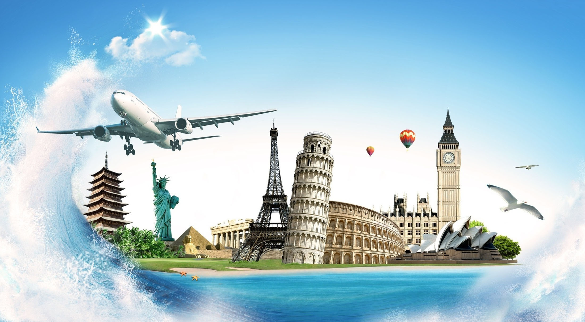

Tourism is travel for pleasure or business; also the theory and practice of touring, the business of attracting, accommodating, and entertaining tourists, and the business of operating tours. Tourism may be international, or within the traveller's country.
Cyprus is a small island with a long history and a rich culture that spans 10000 years, making it one of the oldest civilisations in the Mediterranean - as evidenced by the many fascinating cultural sights, museums, monuments and galleries.